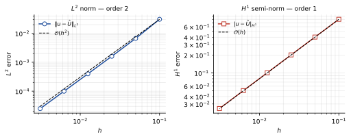
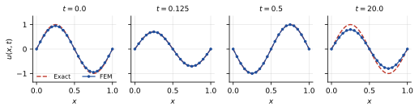
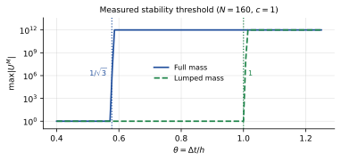
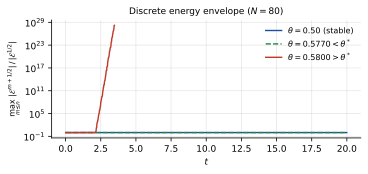

Numerical analysis · Coursework report
Δt ≤ h/c is not enough
A sharp stability analysis of P1 finite elements + leapfrog for the
one-dimensional wave equation. Computing the spectrum of the pair
(S, T) in closed form turns the usual sufficient CFL guess into a
necessary and sufficient condition — and shows that the
consistent mass matrix needs a step √3 times smaller than the
textbook bound suggests.
The result
Exact CFL constant for the consistent mass matrix (θ* = Δt/h = 0.5774), against the 1.0 the familiar bound implies.
Agreement between the analytic threshold and the measured one — the sweep flips at 0.5776 for N = 160, predicted 0.577434.
Observed convergence orders in the L² norm and the H¹ semi-norm, over six mesh refinements from N = 10 to N = 320.
Tables in the report recomputed from source and checked digit-for-digit by a script that fails the build on a mismatch.
The problem
The model problem is the homogeneous Dirichlet wave equation on the unit
interval: find u(x,t) with u_tt − c²u_xx = 0 on
(0,1) × (0,T), u(0,t) = u(1,t) = 0, and given initial
displacement and velocity. Discretise in space with piecewise-linear P1
elements and in time with the centred (leapfrog) difference, and you get the
three-term recursion that every course covers.
What courses usually do not pin down is the stability limit. The
bound quoted from the finite-difference case, Δt ≤ h/c, is
presented as if it carried over. It does not. Run leapfrog with a consistent
mass matrix at Δt = 0.9h/c and it diverges — quietly at first,
because the unstable mode is the highest one and typical initial data barely
excites it, then catastrophically.
So the question this report answers is the sharp one: for which Δt is the scheme stable, exactly — not "for which Δt can we prove it is stable".
The analysis
Eliminating the boundary degrees of freedom keeps the semi-discrete system
symmetric, T Ü + c² S U = 0, with T the mass matrix
and S the stiffness matrix — both symmetric positive definite and
tridiagonal. Expanding in the generalised eigenvectors of (S, T)
decouples the recursion into scalar three-term recursions, one per mode, and
each is stable exactly when its amplification polynomial has roots on the unit
circle. That gives the condition on the step directly:
The step that makes this sharp rather than decorative is that
λmax is available in closed form on a uniform mesh, for
both choices of mass matrix. Writing θm = mπ/N:
| Mass matrix | λmax | h → 0 | CFL bound | θ* = Δt/h |
|---|---|---|---|---|
| Full (consistent) | (6/h²)·max (1−cos θm)/(2+cos θm) | 12/h² | Δt < h/(c√3) | 0.5774 |
| Lumped | (2/h²)·max (1−cos θm) | 4/h² | Δt < h/c | 1.0000 |
That is the whole explanation for the failure above. Δt ≤ h/c is
the lumped constant; applying it to the consistent mass matrix
overshoots the true limit by √3. The report also proves the matching
convergence result via the Ritz projection — which avoids an uncontrolled
remainder term and removes any need for the Aubin–Nitsche lemma — giving
O(h²) in L² and O(h) in the H¹ semi-norm for P1.
Numerical evidence
Four experiments, all against the exact solution
u(x,t) = cos(2πct)·sin(2πx), errors measured at
T = 1 with 5-point Gauss–Legendre quadrature per element. Every
number below was regenerated from source for this page.
1 — Spatial order
| N | h | Δt | ‖u−Û‖L² | order | |u−Û|H¹ | order |
|---|---|---|---|---|---|---|
| 10 | 0.100000 | 0.050000 | 3.0679e−02 | — | 8.0145e−01 | — |
| 20 | 0.050000 | 0.025000 | 6.6945e−03 | 2.20 | 4.0227e−01 | 0.99 |
| 40 | 0.025000 | 0.012500 | 1.6129e−03 | 2.05 | 2.0138e−01 | 1.00 |
| 80 | 0.012500 | 0.006250 | 3.9944e−04 | 2.01 | 1.0072e−01 | 1.00 |
| 160 | 0.006250 | 0.003125 | 9.9623e−05 | 2.00 | 5.0364e−02 | 1.00 |
| 320 | 0.003125 | 0.001563 | 2.4891e−05 | 2.00 | 2.5183e−02 | 1.00 |

h on log–log axes, with O(h²) and O(h) reference
lines. The data run parallel to the references over the whole range.

2 — Temporal order
To separate the time error from the space error, N is held at 200 and successive halvings of Δt are compared Richardson-style: ‖ÛΔt − ÛΔt/2‖ has the same order as the temporal error.
| θ = Δt/h | Δt | ‖ÛΔt − ÛΔt/2‖L² | order |
|---|---|---|---|
| 0.500000 | 2.500e−03 | 1.023662e−08 | — |
| 0.250000 | 1.250e−03 | 2.299690e−09 | 2.15 |
| 0.125000 | 6.250e−04 | 5.586810e−10 | 2.04 |
| 0.062500 | 3.125e−04 | 1.386980e−10 | 2.01 |
| 0.031250 | 1.563e−04 | 3.466993e−11 | 2.00 |
Order 2 confirms the analysis and, with it, the second-order initialisation of the first time step — a first-order start would have shown up here as a degraded order.
3 — Locating the threshold
The direct test of the sharp condition: sweep θ = Δt/h and record the amplitude after M = ⌊T/Δt⌋ steps from data normalised to 1. The highest mode is seeded at amplitude 1e−8 so that an instability shows up immediately instead of waiting for round-off to grow it.
| θ | N = 80 | N = 160 | State |
|---|---|---|---|
| 0.5700 | 9.999e−01 | 9.999e−01 | both stable |
| 0.5774 | 9.997e−01 | 1.000e+00 | both stable |
| 0.5776 | 9.998e−01 | 1.002e+00 | N = 160 just past its threshold |
| 0.5778 | 9.998e−01 | 2.362e+00 | N = 160 diverges |
| 0.5780 | 9.999e−01 | 2.065e+02 | N = 160 diverges |
| 0.5800 | 2.242e+02 | 1.623e+14 | both diverge |
The measured threshold matches θ* to four significant figures. The detail worth noticing is the row at θ = 0.5776, where N = 160 has gone unstable while N = 80 is still fine — exactly what the closed form predicts, since θ* decreases with N towards 1/√3 from above. A coarse-mesh test would have passed here and shipped the bug.


4 — What lumping buys
Repeating experiment 1 with the lumped mass matrix at θ = 0.9 — beyond the full matrix's threshold, inside the lumped one's:
| N | h | ‖u−Û‖L² | order | |u−Û|H¹ | order |
|---|---|---|---|---|---|
| 10 | 0.100000 | 2.5370e−02 | — | 8.0057e−01 | — |
| 20 | 0.050000 | 6.3636e−03 | 2.00 | 4.0226e−01 | 0.99 |
| 40 | 0.025000 | 1.5922e−03 | 2.00 | 2.0138e−01 | 1.00 |
| 80 | 0.012500 | 3.9815e−04 | 2.00 | 1.0072e−01 | 1.00 |
| 160 | 0.006250 | 9.9542e−05 | 2.00 | 5.0364e−02 | 1.00 |
| 320 | 0.003125 | 2.4886e−05 | 2.00 | 2.5183e−02 | 1.00 |
Lumping keeps the O(h²) order, gives a marginally smaller L² error, allows a step √3 ≈ 1.73 times larger, and reduces each solve to a scalar division instead of a tridiagonal solve. For this problem it wins on every axis at once — which is worth saying plainly, because mass lumping is usually introduced as a trade-off.
Reproducibility
A report whose tables cannot be regenerated is a claim, not a result. So the
repository carries reproduce_tables.py: it recomputes all four
tables from fem_wave.py, compares each entry against the value
printed in the PDF, and exits non-zero on any mismatch.
pip install numpy matplotlib
python3 reproduce_tables.py # recomputes Tables 1-4, checks them, writes results/tables.md
python3 make_figs.py # figures/*.pdf - the report's figures
python3 make_figs.py --web # docs/fem-wave/figures/*.svg - this page's figuresCurrent state: all four tables agree with the report to every printed digit, and the figures on this page are generated by the same script that generates the report's, from the same computed arrays — so the page cannot drift away from the paper.
The gap it caught
The first run reproduced Tables 1, 2 and 4 exactly and failed on Table 3: the
stability sweep stayed bounded at θ = 0.578 and θ = 0.580, where the report
records divergence. The cause was not the analysis but the listing. Section 7.3
seeds the highest eigenmode at amplitude 1e−8 so the instability is visible at
once; the growth() function printed in Appendix A did not do it.
Initial data sin(2πx) contains almost none of mode
m = N−1, so without the seed you are waiting on round-off.
growth() now takes seed=1e-8 (seed=0.0
restores the old behaviour) and all six rows of Table 3 reproduce to four
digits. The appendix includes the file with \lstinputlisting, so
the report picks up the fix on its next compile. Worth stating rather than
quietly patching: the published numbers were right, the published code could
not produce them, and only running it found that out.
Where it stops
- One space dimension, uniform mesh, constant wave speed, homogeneous Dirichlet data, P1 elements, explicit leapfrog. The sharp constant is exact under those assumptions and claims nothing outside them.
- A variable coefficient, a non-uniform mesh, or higher-order elements each change λmax, so the constant would have to be recomputed. The method — diagonalise (S, T), read off the bound — carries over; the number does not.
- The scheme is conservative but dispersive: amplitude is preserved indefinitely, phase is not. Over 20 periods at N = 20 the visible error is entirely phase lag, and no stability result improves that — it takes a finer mesh or a higher-order element.
- The convergence proof is for smooth solutions. Rough initial data reduces the observed order and is not tested here.